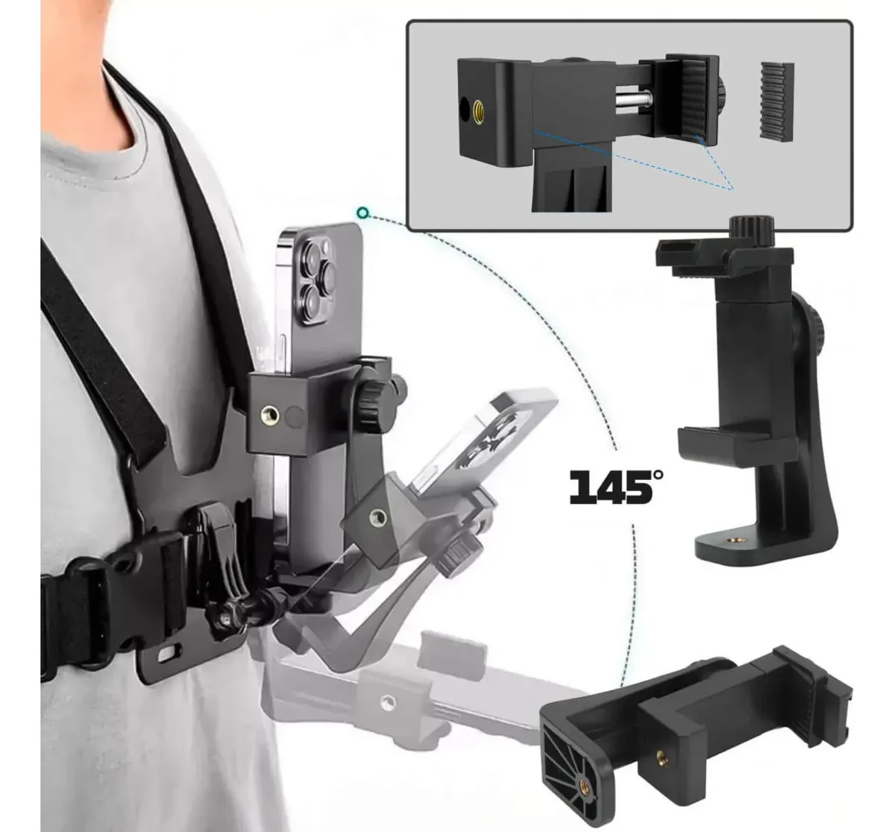

O app fica pronto e guarda os segundos anteriores ao comando.
Nunca mais perca
O momento perfeito
Use seu celular no suporte de peito, fale o comando e deixe o NorviCam gravar antes, durante e depois da ação.
Pré-gravação inteligente
Comando por voz
Gravação contínua
Feito para suporte
Android 7.0+
Teste grátis para começar
Controle por voz offline

Como funciona
Use no suporte de peito, guidão, mochila ou onde a câmera fique livre.
Use a frase configurada para iniciar ou parar sem encostar na tela.
O vídeo vai para a galeria do NorviCam, pronto para assistir ou compartilhar.
Benefícios do NorviCam
Com o buffer de 15s ou 30s, o app salva também o que aconteceu antes do comando.
Ideal para bike, pesca, moto, trilha, corrida e qualquer momento em que tocar na tela atrapalha.
Você pode escolher a frase de ativação para evitar que outra pessoa acione seu app.
Com as permissões certas, o NorviCam continua pronto mesmo com a tela apagada.
Grave com som, alta qualidade e galeria própria para encontrar suas capturas rapidamente.
Acompanhe se o app está pronto, gravando, salvando ou aguardando comando.



Acessório recomendado
Use um suporte de peito e transforme seu celular em câmera de ação.
O NorviCam foi pensado para esse uso: celular preso, app pronto, comando por voz e captura automática. Depois você pode trocar o botão abaixo pelo seu link de afiliado do Mercado Livre.
Comprar suporte indicado
Espaço pronto para link de afiliado.
Plano
Mais escolhido
NorviCam Premium
O pacote completo para transformar seu celular em câmera de ação: voz, buffer, tela apagada, áudio, galeria e qualidade alta quando o aparelho suportar.
R$ 12,90 /mês
- Buffer inteligente de 15s ou 30s
- Gravação contínua com áudio
- Grava com a tela apagada
- Comandos de voz personalizados e offline
- Qualidade 720p, 1080p e 4K quando disponível
- Estabilização em aparelhos compatíveis
- Câmera traseira e frontal
- Zoom 0.6x, 1x e 2x quando suportado
- Galeria com vídeos salvos e exclusão
- Status do app e monitoramento
- Aviso de voz quando fica pronto
- Uso com suporte no peito
Perguntas frequentes
O app funciona offline?
Sim. A gravação e o comando de voz local funcionam no aparelho, sem enviar áudio para a internet.
Por que preciso liberar permissões?
Porque o app usa câmera, microfone, notificações e gravação em segundo plano. Sem isso, alguns recursos podem falhar.
Posso cancelar quando quiser?
Sim. A ideia é uma assinatura mensal simples após o teste grátis.